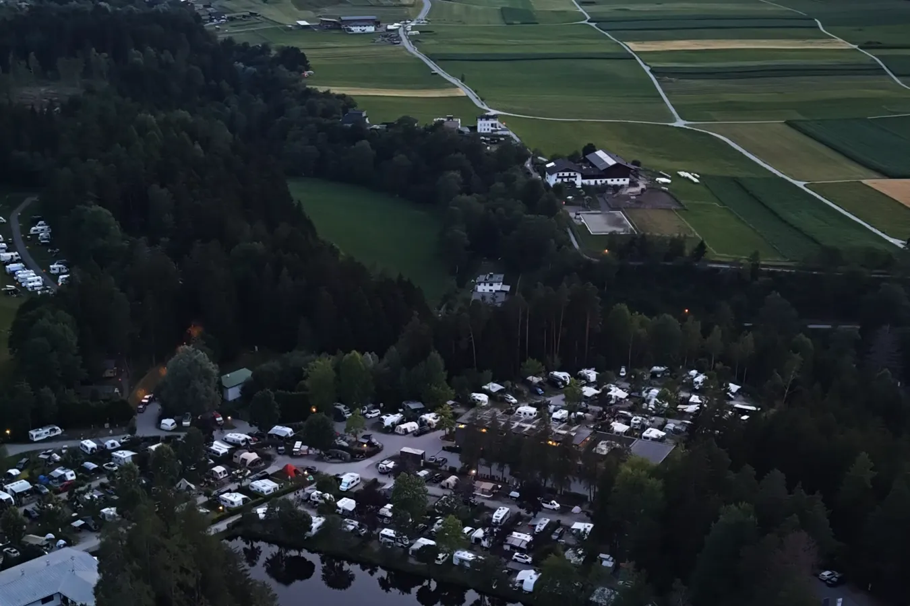
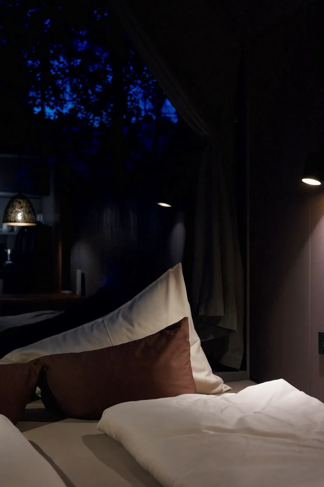
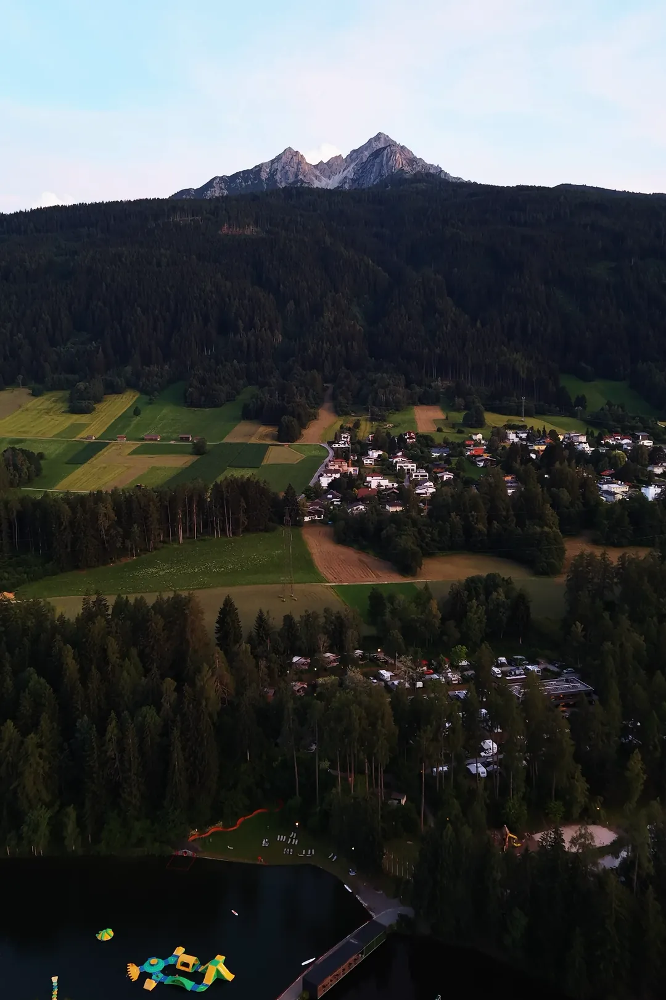
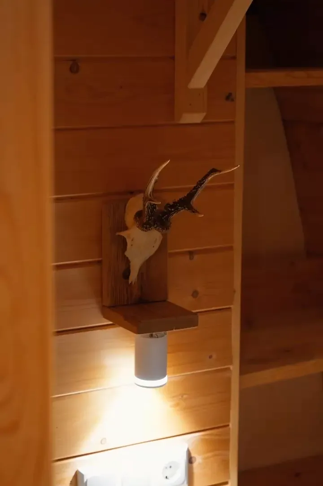

Lodges aan de rand
van het water.
Een resort aan een meer net buiten Innsbruck, waar de lodges zo dicht op het water staan dat de weerspiegeling het halve werk doet.
- Aerial masters, gegradeerd
- Verticals voor eigen kanalen
- Stills uit de lucht
- Volledige gebruiksrechten
Het meer is hier het hele idee. Vanaf de grond zie je een oever; vanuit de lucht zie je waarom iemand de bergen in rijdt om erop te slapen. Dat gat tussen die twee blikken is de film.
Het dronewerk blijft langzaam en doelgericht — een lift over het water bij schemer, een reveal langs de lodges in plaats van een vlucht eroverheen. Binnen blijft het licht zoals het is: warm hout, één lamp, niets in scène gezet.
Opgeleverd als verticals voor de eigen kanalen van het resort, naast de aerial masters, alles onder volledige gebruiksrechten.



Vanaf de grond is het een oever.
Vanuit de lucht is het een reden om te rijden.